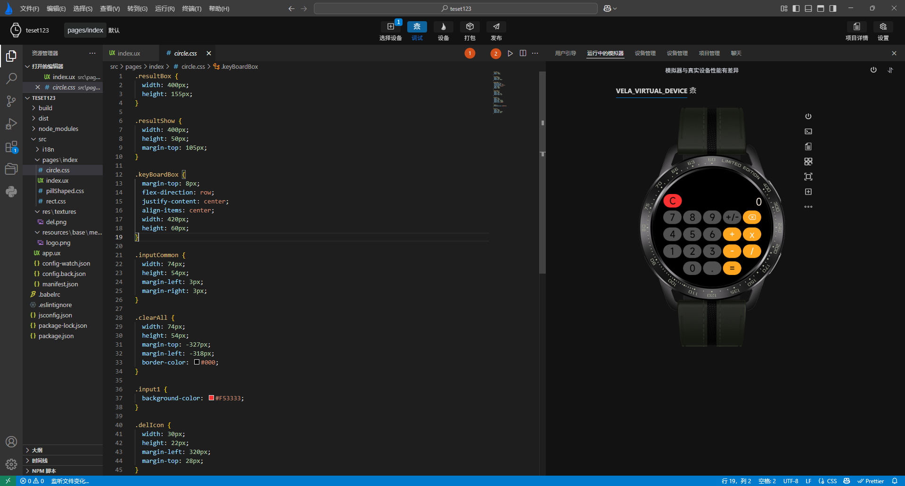
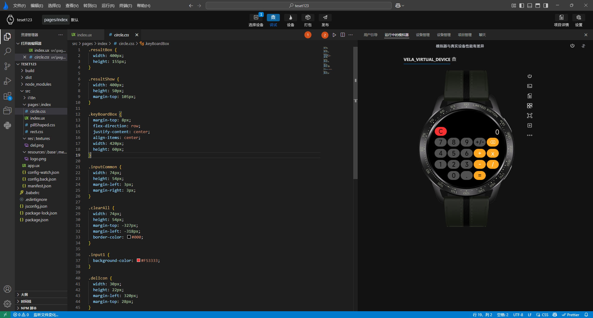

# 打包应用
Xiaomi Vela JS 应用 应用的封装采用了专门的 .rpk 文件格式，而在 AIoT-IDE 中，我们在顶部操作栏提供了打包，发布两个按钮对项目进行打包，如下图标签1，2所示。

直接点击打包应用，会在功能面板执行打包名，打包成功后会在dist目录下生成debug包

debug包是为了方便开发者进行调试而设计的，因此它不会进行过多的优化。通常情况下，debug 包会包含调试信息，以便开发者进行调试和定位错误。
Xiaomi Vela JS 应用 应用的封装采用了专门的 .rpk 文件格式，而在 AIoT-IDE 中，我们在顶部操作栏提供了打包，发布两个按钮对项目进行打包，如下图标签1，2所示。

直接点击打包应用，会在功能面板执行打包名，打包成功后会在dist目录下生成debug包
debug包是为了方便开发者进行调试而设计的，因此它不会进行过多的优化。通常情况下，debug 包会包含调试信息，以便开发者进行调试和定位错误。